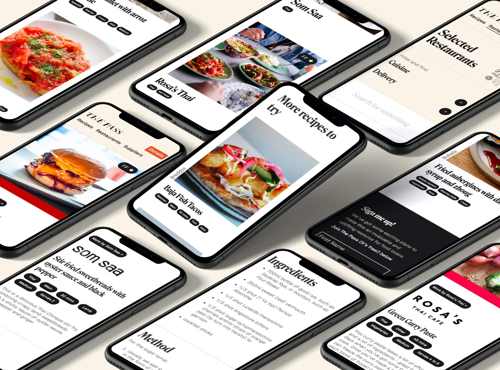
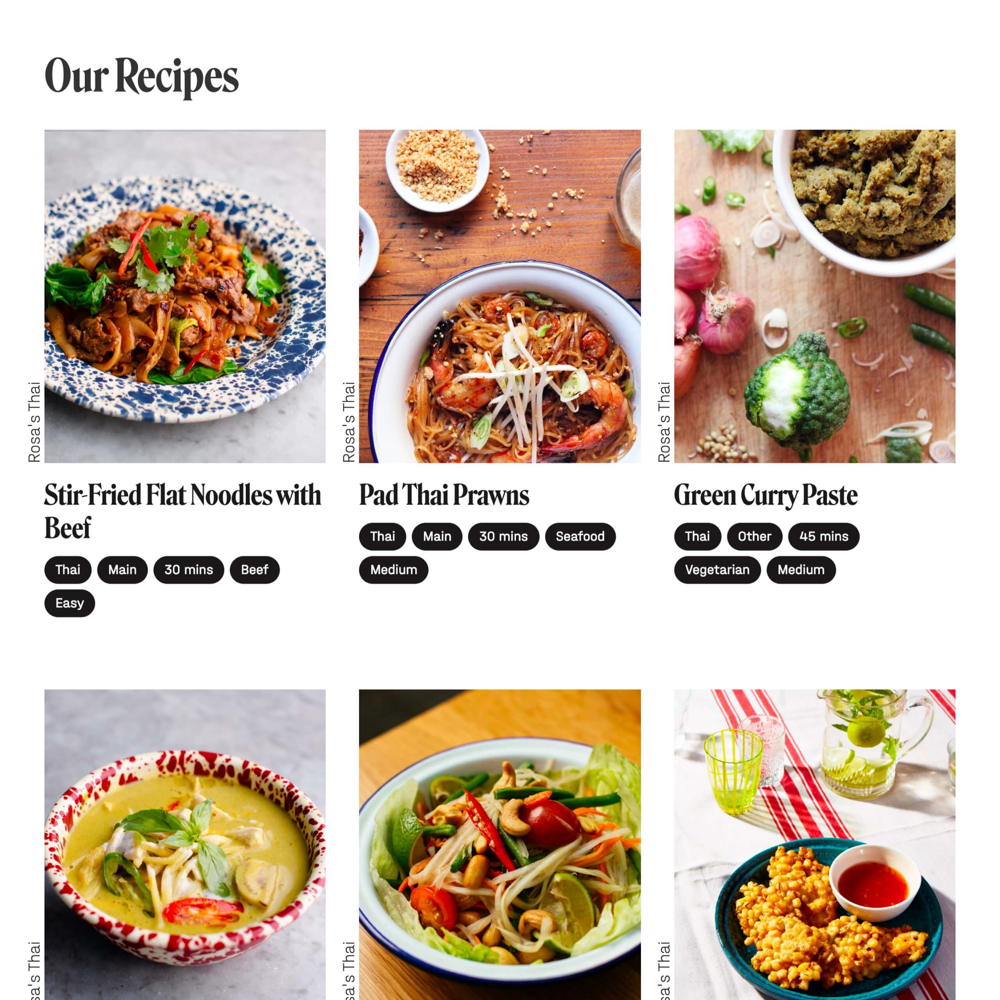
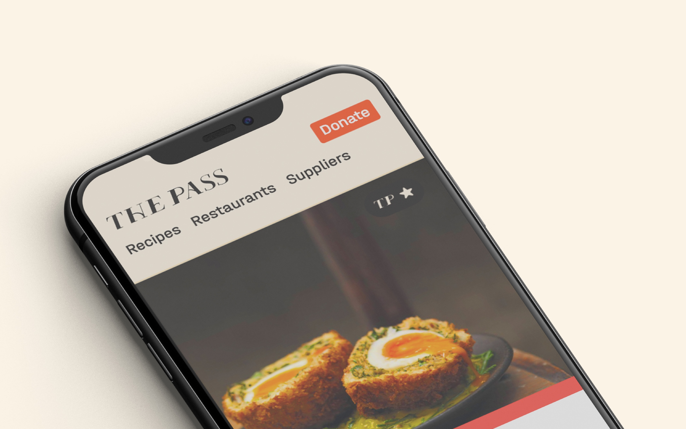

The Pass was set up as a collaboration project between myself, Alex Lazzare and a few others to help the restaurant industry in it’s greatest time of need.
The project was born from the frustration we all felt watching an industry we all love so dearly be forced to shut up shop and be left helpless by a situation far out of their control.
The first task we had to tackle was to brand and name The Pass. Whilst a lot of ideas were floated including some French words (don’t ask) we settled on The Pass. The Pass is the part of any kitchen where the food makes it’s way from chef to table. With our goal of bringing the finest restaurant food to the world’s tables it felt like we couldn’t have landed on a better name.
Logo created by Rita Nicolau at Run For The Hills
To support the whole of the restaurant industry we wanted to have three types of pages. Firstly a collection of recipes for people to browse, secondly a way for them to find these recipes/any content or even a delivery from their favourite restaurants and thirdly a way to allow people to see the suppliers behind their favourite kitchens and to even invite them into their home.
One of the biggest considerations was how to get our partners recipes to shine. therefore we decided to maximise the amount of screen space an image could take up without you not being able to also parse the information on the page whether you were browsing on your laptop, tablet or phone.
